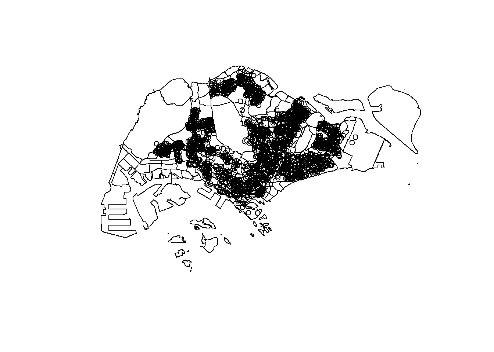

pacman::p_load(sf, tidyverse)Hands-on Exercise 01
1 Geospatial Data Science with R
1.1 Learning Outcome
competent check boxes:
1.2 Data Acquisition
1.2 Data Acquisition Data are key to data analytics including geospatial analytics. Hence, before analysing, we need to assemble the necessary data. In this hands-on exercise, you are required to extract the necessary data sets from the following sources:
Master Plan 2014 Subzone Boundary (Web) from data.gov.sg
Pre-Schools Location from data.gov.sg
Cycling Path from LTADataMall
Latest version of Singapore Airbnb listing data from Inside Airbnb
1.2.1 Extracting the geospatial data sets
To get started, create a new folder called Hands-on_Ex in a working directory.
Next, create a new sub-folder called Hands-on_ex01 in the newly created Hands-on_Ex folder.
In the Hands-on_Ex01 folder, create a sub-folder called data. Then, inside the data sub-folder, create two sub-folders and name them geospatial and aspatial respectively.
Place Master Plan 2014 Subzone Boundary (Web), Pre-Schools Location and Cycling Path zipped files into geospatial sub-folder and unzipped them. Copy the unzipped files from their respective sub-folders and place them inside geospatial sub-folder.
**1.2.2 Extracting the aspatial data set
** Now, you will extract the downloaded listing data file. At Downloads folder, cut and paste listing.csv into aspatial sub-folder.
1.3 Getting Started
In this hands-on exercise, two R packages will be used. They are:
sf for importing, managing, and processing geospatial data, and
tidyverse for performing data science tasks such as importing, wrangling and visualising data.
Tidyverse consists of a family of R packages. In this hands-on exercise, the following packages will be used:
- readr for importing csv data,
- tidyr for manipulating data,
- dplyr for transforming data, and
- ggplot2 for visualising data
Note
Tidyverse consists of a family of R packages. In this hands-on exercise, the following packages will be used:
- readr for importing csv data,
- tidyr for manipulating data,
- dplyr for transforming data, and
- ggplot2 for visualising data
Warning
You must have pacman R package installed. If you have yet to do so, you should install pacman before moving to the next step.
Use the code chunk below to load the necessary R packages into R.
1.4 Importing Geospatial Data
1.4.1 Importing polygon feature data in shapefile format
The code chunk below uses st_read() function of sf package to import MP14_SUBZONE_WEB_PL shapefile into R as a polygon feature data frame. Note that when the input geospatial data is in shapefile format, two arguments will be used, namely: dsn to define the data path and layer to provide the shapefile name. Also note that no extension such as .shp, .dbf, .prj and .shx are needed.
library(sf)
mpsz = st_read("data/geospatial/MasterPlan2014SubzoneBoundaryNoSea.geojson")Reading layer `MP14_SUBZONE_NO_SEA_PL' from data source
`C:\hungthq\ISSS626-GAA\Hands-on_Ex\Hands-on_ex01\data\geospatial\MasterPlan2014SubzoneBoundaryNoSea.geojson'
using driver `GeoJSON'
Simple feature collection with 323 features and 13 fields
Geometry type: MULTIPOLYGON
Dimension: XY
Bounding box: xmin: 103.6057 ymin: 1.158699 xmax: 104.0885 ymax: 1.470775
Geodetic CRS: WGS 841.4.2 Importing polyline feature data in shapefile form
The code chunk below uses st_read() function of sf package to import CyclingPath shapefile into R as line feature data frame.
cyclingpath = st_read("data/geospatial/CyclingPathNetworkGEOJSON.geojson")Reading layer `CYCLINGPATH' from data source
`C:\hungthq\ISSS626-GAA\Hands-on_Ex\Hands-on_ex01\data\geospatial\CyclingPathNetworkGEOJSON.geojson'
using driver `GeoJSON'
Simple feature collection with 8523 features and 6 fields
Geometry type: MULTILINESTRING
Dimension: XY
Bounding box: xmin: 103.637 ymin: 1.265428 xmax: 103.9664 ymax: 1.467361
Geodetic CRS: WGS 841.4.3 Importing GIS data in kml format
The PreSchoolsLocation is in kml format. The code chunk below will be used to import the kml into R.
preschool = st_read("data/geospatial/PreSchoolsLocation.geojson")Reading layer `PreSchoolsLocation' from data source
`C:\hungthq\ISSS626-GAA\Hands-on_Ex\Hands-on_ex01\data\geospatial\PreSchoolsLocation.geojson'
using driver `GeoJSON'
Simple feature collection with 2290 features and 2 fields
Geometry type: POINT
Dimension: XYZ
Bounding box: xmin: 103.6878 ymin: 1.247759 xmax: 103.9897 ymax: 1.462134
z_range: zmin: 0 zmax: 0
Geodetic CRS: WGS 84
Tip
this is the example of a Tip
1.5 Checking the Content
st_geometry(mpsz)Geometry set for 323 features
Geometry type: MULTIPOLYGON
Dimension: XY
Bounding box: xmin: 103.6057 ymin: 1.158699 xmax: 104.0885 ymax: 1.470775
Geodetic CRS: WGS 84
First 5 geometries:MULTIPOLYGON (((103.8432 1.284328, 103.8428 1.2...MULTIPOLYGON (((103.8221 1.280494, 103.8221 1.2...MULTIPOLYGON (((103.8438 1.285079, 103.8436 1.2...MULTIPOLYGON (((103.8496 1.284119, 103.8496 1.2...MULTIPOLYGON (((103.8525 1.286166, 103.8524 1.2...glimpse(mpsz)Rows: 323
Columns: 14
$ OBJECTID_1 <int> 21, 22, 23, 24, 25, 26, 27, 28, 29, 30, 31, 32, 33, 34, 3…
$ SUBZONE_NO <int> 2, 2, 3, 4, 5, 4, 10, 12, 4, 6, 1, 1, 3, 8, 3, 7, 9, 2, 1…
$ SUBZONE_N <chr> "PEOPLE'S PARK", "BUKIT MERAH", "CHINATOWN", "PHILLIP", "…
$ SUBZONE_C <chr> "OTSZ02", "BMSZ02", "OTSZ03", "DTSZ04", "DTSZ05", "OTSZ04…
$ CA_IND <chr> "Y", "N", "Y", "Y", "Y", "Y", "N", "Y", "N", "Y", "Y", "Y…
$ PLN_AREA_N <chr> "OUTRAM", "BUKIT MERAH", "OUTRAM", "DOWNTOWN CORE", "DOWN…
$ PLN_AREA_C <chr> "OT", "BM", "OT", "DT", "DT", "OT", "BM", "DT", "BM", "DT…
$ REGION_N <chr> "CENTRAL REGION", "CENTRAL REGION", "CENTRAL REGION", "CE…
$ REGION_C <chr> "CR", "CR", "CR", "CR", "CR", "CR", "CR", "CR", "CR", "CR…
$ INC_CRC <chr> "B4120D23006C932A", "1C51019439A68700", "0FF1661344C84AED…
$ FMEL_UPD_D <chr> "20160511160621", "20160511160621", "20160511160621", "20…
$ SHAPE_1.AREA <dbl> 93140.44, 411722.82, 587222.68, 39437.94, 188767.49, 1330…
$ SHAPE_1.LEN <dbl> 1822.1927, 3074.9632, 4297.5999, 871.5549, 1872.7522, 160…
$ geometry <MULTIPOLYGON [°]> MULTIPOLYGON (((103.8432 1...., MULTIPOLYGON…head(mpsz, n=5)Simple feature collection with 5 features and 13 fields
Geometry type: MULTIPOLYGON
Dimension: XY
Bounding box: xmin: 103.8131 ymin: 1.274155 xmax: 103.8532 ymax: 1.286506
Geodetic CRS: WGS 84
OBJECTID_1 SUBZONE_NO SUBZONE_N SUBZONE_C CA_IND PLN_AREA_N PLN_AREA_C
1 21 2 PEOPLE'S PARK OTSZ02 Y OUTRAM OT
2 22 2 BUKIT MERAH BMSZ02 N BUKIT MERAH BM
3 23 3 CHINATOWN OTSZ03 Y OUTRAM OT
4 24 4 PHILLIP DTSZ04 Y DOWNTOWN CORE DT
5 25 5 RAFFLES PLACE DTSZ05 Y DOWNTOWN CORE DT
REGION_N REGION_C INC_CRC FMEL_UPD_D SHAPE_1.AREA
1 CENTRAL REGION CR B4120D23006C932A 20160511160621 93140.44
2 CENTRAL REGION CR 1C51019439A68700 20160511160621 411722.82
3 CENTRAL REGION CR 0FF1661344C84AED 20160511160621 587222.68
4 CENTRAL REGION CR 615D4EDDEF809F8E 20160511160621 39437.94
5 CENTRAL REGION CR 72107B11807074F4 20160511160621 188767.49
SHAPE_1.LEN geometry
1 1822.1927 MULTIPOLYGON (((103.8432 1....
2 3074.9632 MULTIPOLYGON (((103.8221 1....
3 4297.5999 MULTIPOLYGON (((103.8438 1....
4 871.5549 MULTIPOLYGON (((103.8496 1....
5 1872.7522 MULTIPOLYGON (((103.8525 1....1.6 Plotting the Geospatial Data
In geospatial data science, by looking at the feature information is not enough. We are also interested to visualise the geospatial features. This is the time you will find plot() of R Graphic comes in very handy as shown in the code chunk below.
plot(mpsz)Warning: plotting the first 9 out of 13 attributes; use max.plot = 13 to plot
all
plot(st_geometry(mpsz))
plot(mpsz["PLN_AREA_N"])
plot(st_geometry(mpsz))
plot(st_geometry(preschool),
add = TRUE)